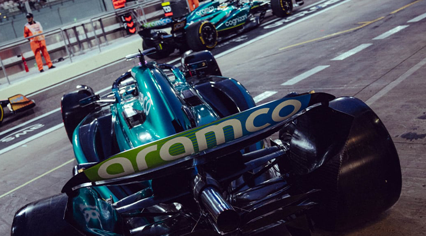

Alonso: Aston Martin se enfrenta a un "periodo complicado" en su próximo paso en la F1
Fernando Alonso cree que su equipo Aston Martin de Fórmula 1 se enfrenta a un "periodo complicado" en su intento de dar el siguiente paso para convertirse en un aspirante regular a las victorias en carrera.